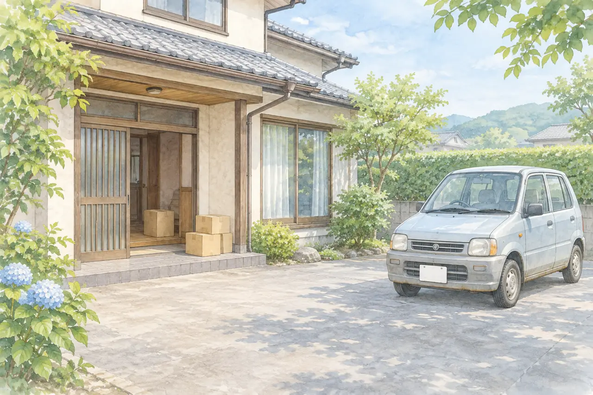
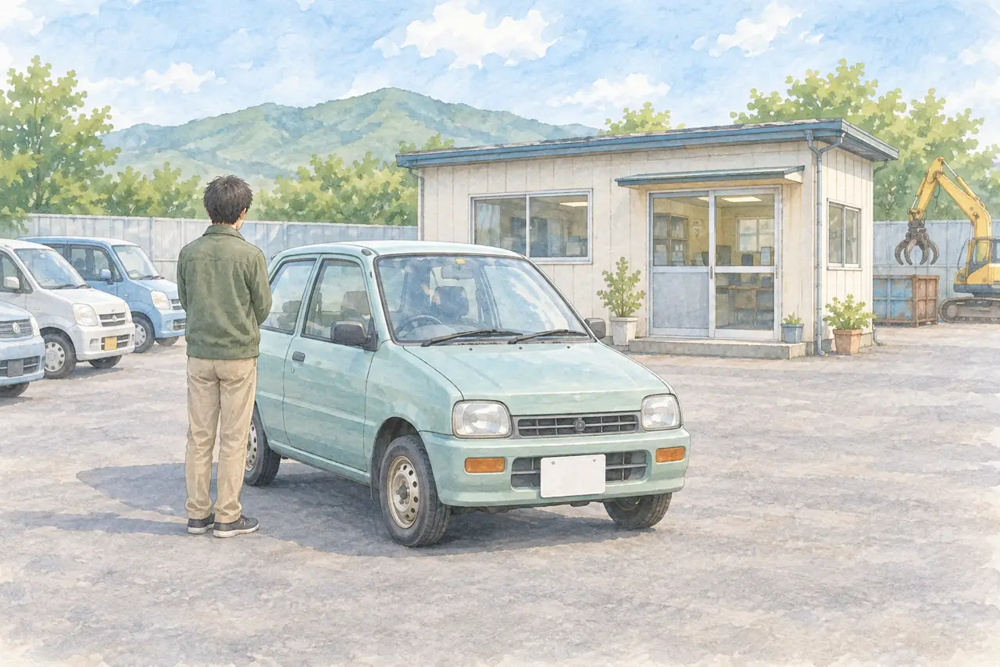

遺品整理で車が出てきた方へ
遺品整理で車が出てきたら
車の処分は誰にどう頼む？確認することと、依頼の流れ
公開
こんにちは、東京都足立区江北で自動車解体・廃車買取をしている「大崎商店 環七店」です。
「遺品整理をしていたら、車が1台残っていた」
「家の中は片づいたけれど、車だけ、どこに頼めばいいか分からない」
そんなとき、車は、家の中の片付けとは別に、手続きと引き渡しが必要です。 遺品整理を進める会社の方も、ご遺族の方も、順番に確認しましょう。
片付けの途中で、車の手続きまで考えるのは、大変です。 分からないことは、まず、お電話でご相談ください。
この記事の要点
- 車は、家の片付けとは別に、処分の手続きが必要です。 先に車検証で所有者を調べ、車を引き継ぐ方や手放す意思を確認します。
- 車の中の遺品や、車検証・鍵の場所も、先に確認しましょう。 車検証は、車の中にあることが多いです。
- 大崎商店でも、遺品整理の会社から、軽自動車を持ち込まれたことがあります。 車の状態と置き場所を伺い、ご案内します。
① 車は、家の片付けとは別に手続きが必要です

家の中の荷物は、遺品整理の会社が片づけることがあります。ただし、車は、家財とは別の手続きが必要です。 亡くなった方が所有していた車は、相続の対象です。相続の状況に応じて、車を引き継ぐ方や、手放すことへの合意を確認してから進めましょう。
遺品整理の会社が相談や搬入をする場合も、車の処分を依頼する権限があるかを先に確認しましょう。
② 片付けと一緒に、車のことで確認すること
あとで困らないために、片付けと同じタイミングで確認しておくと安心です。
- 車の中の遺品：ETCカード、ナビのデータ、書類、思い出の品など。引き渡しの前に出す
- 鍵と置き場所：駐車場か、家の前か。鍵はあるか。積載車が入れる道か
- 車の状態：動くか、動かないか。車検がいつまでか
- 車検証と所有者：車内や保管書類を探し、所有者が故人か、ご遺族か、ローン会社などかを確認する。見つからなければ、そのまま依頼先に伝える
電子車検証の場合は、紙の「自動車検査証記録事項」や車検証閲覧アプリで、所有者と車検の期限を確認できます。
名義が亡くなった方のときの書類は、亡くなった家族の車を廃車するときの手続きの記事で、くわしく紹介しています。
③ 依頼先に確認すること
遺品整理の会社と、車の処分を頼む会社は、別でもかまいません。 電話では、次のことを確認しましょう。
- 「亡くなった方の名義の車ですが、誰の確認と、どんな書類が必要ですか」
- 「引き取りから廃車手続きまでに支払う総額と、追加費用がかかる条件を教えてください」
- 「車の中に、遺品が残っていてもいいですか」
- 「引き取りに来てもらう場合、日時はいつごろになりますか」
④ 大崎商店の場合：遺品整理の車

大崎商店では、遺品整理の会社から、軽自動車をお持ち込みいただいたことがあります。 自走でき、車検も残っていた車で、車検証は車の中に入っていました。車検証の名義は、亡くなった方のままでした。必要な確認や書類は、相続の状況ごとに異なります。
車の状態や名義、置いてある場所によって、必要なものは変わります。まず、環七店（03-3854-4141）へお電話ください。車の種類と状態、車検証の有無と所有者、ご相談される方と故人との関係を伺い、ご案内します。
大崎商店では、
- 解体費用・手続き代行費用・印紙代は、別請求しません
- 足立区内は、引き取り無料
- 足立区外も、買取価格がつかない車は、環七店または入谷店から車で片道約30分圏内は引き取り無料（目安です）
- 買取価格がつく車は、圏外でも、所在地と車の状態によっては無料で引き取り（事前にご案内します）
- 車のお持ち込みは、どこからでも歓迎（基本は環七店。日時は、事前にお電話でご相談ください）
動かない車は、ワイヤーで積載車の荷台に引き上げて積むこともできます。積載車が入れない細い道や、車を積み込む場所がない現場では、お断りすることがあります。その場合も、追加の費用はいただきません。
持ち込み先と日時は、事前にお電話でご相談ください。自走して持ち込む場合は、車検・自賠責が有効で、安全に走れることを確認してください。
車の中の遺品は、引き渡しの前に出しておいてください。車ごと解体する場合、車に残ったものは、基本的に車と一緒に処分します。
解体作業は、解体業の許可を受けた入谷店で行います。
ご自分の車の場合が気になったら、お気軽にご相談ください。車の状態と置き場所を伺い、ご案内します。
電話で相談する03-3854-4141よくある質問
Q. 車検証が見つかりません。
A. 車の中や、ご家族が保管している書類を、先に探してみてください。見つからないときは、車検証をなくしたけど廃車できる？の記事をご覧ください。
Q. 車の名義が、亡くなった方のままです。
A. 相続の状況に応じて、車を引き継ぐ方や、手放すことへの合意を確認します。電話では、車検証の所有者と、ご家族の状況をお伝えください。くわしくは、亡くなった家族の車を廃車するときの手続きの記事をご覧ください。
Q. 遺品整理の会社から、車の相談をしてもいいですか。
A. 車を引き取れる場合は、どなたからのご相談でも歓迎です。遺品整理の会社の方からも、お待ちしています。車の種類と状態、置いてある場所を伺い、ご案内します。処分を進める前に、相続人側の意思と、依頼する権限を確認してください。まず、お電話でご相談ください。
Q. 現場に来てもらってから、断られることはありますか？
A. 積載車が入れない道や、車を載せられない場所では、お断りすることがあります。その場合も、追加の費用はいただきません。電話で、車の状態・場所・道の広さを先に伺い、断る事態をできるだけ減らします。
遺品整理で出てきた車のご相談は、大崎商店へ
電話で相談する 03-3854-4141メールで相談する（フォーム）大崎商店 環七店
電話：03-3854-4141
〒123-0872
東京都足立区江北7丁目1−3
営業時間：月〜土 10:00〜18:00
休業日：日曜・祝日
環七沿い／舎人ライナー
西新井大師西駅
大崎商店 入谷店
電話：03-3899-2837
〒121-0836
東京都足立区入谷7丁目5−11
営業時間：月〜土 9:30〜17:30
休業日：日曜・祝日・第2土曜
遺品整理で出てきた車のご相談は、環七店へ。 車の種類と状態、車検証の有無と所有者をお伝えください。
くわしい条件と出典（読みたい方向け）
- 引き取りの条件：積載車は1台で、複数の引き取りを同時には行っていません。すぐに伺えるかは、そのときの仕事の状況によります。到着の日時は、電話で事前にご案内します。引き取りの範囲は、出張引き取りの対応エリアの記事をご覧ください。
- 車検証の所有者の確認：所有者がディーラーやローン会社の場合は、ご自身だけでは進められないことがあります。くわしくは、ローンが残っている車は廃車できる？の記事をご覧ください。
- 故人が所有する車の手続き：普通車は相続の状況と申請内容に応じた手続きが必要です。軽自動車も、所有者死亡に伴う名義変更と廃車の手続きを確認します。窓口・書類の詳細は、亡くなった家族の車を廃車するときの手続きへ。関東運輸局・自動車の相続による手続き／軽自動車検査協会・所有者が死亡した車の廃車
- 電子車検証の確認：所有者や車検の有効期間は、電子車検証の券面には記載されません。記録事項の用紙や閲覧アプリで確認します。国土交通省・電子車検証について
- 相続放棄を考えている場合：車の売却・解体などが相続放棄に影響することがあるため、先に弁護士などへ相談してください。民法第921条（法定単純承認）／裁判所・相続の放棄の申述
※掲載画像はAIで生成したイラストです。実際の店舗・人物・車両とは異なります。